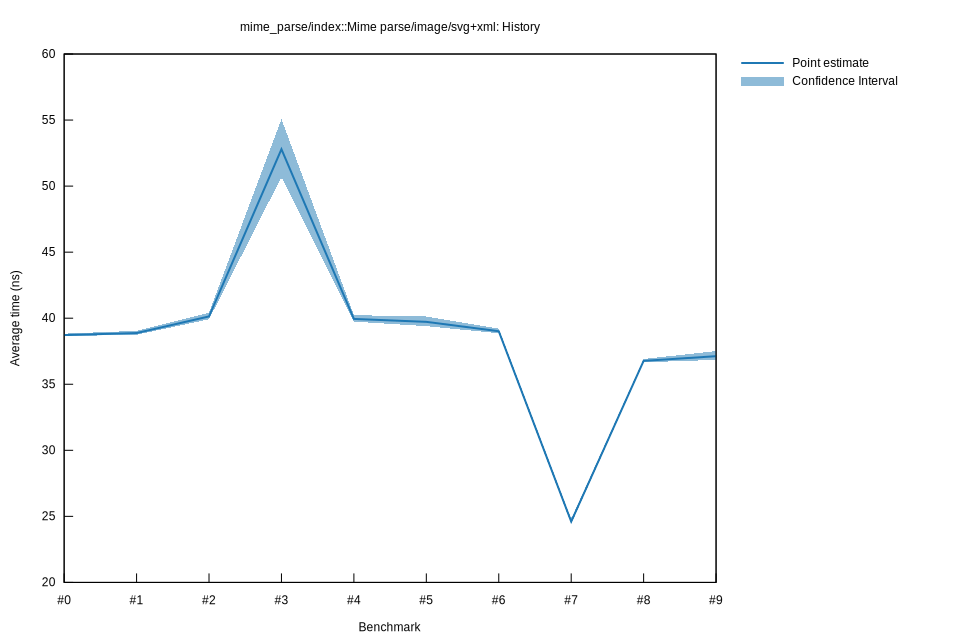

# 62025-10-14T16:07:50-07:00
|
Lower Bound |
Estimate |
Upper Bound |
| Value: |
38.86ns |
39.01ns |
39.21ns |
| Throughput: |
319.02MiB/s |
317.79MiB/s |
316.17MiB/s |
| Change in Value: |
-2.1227% |
-1.1511% |
-0.2452% |
| Change in Throughput: |
+2.1687% |
+1.1645% |
+0.2458% |
No change in performance detected.
# 52025-10-14T16:04:23-07:00
|
Lower Bound |
Estimate |
Upper Bound |
| Value: |
39.40ns |
39.72ns |
40.13ns |
| Throughput: |
314.69MiB/s |
312.09MiB/s |
308.93MiB/s |
| Change in Value: |
-1.0819% |
-0.0303% |
+0.9208% |
| Change in Throughput: |
+1.0937% |
+0.0303% |
-0.9124% |
Change within noise threshold.
# 42025-10-14T15:55:23-07:00
|
Lower Bound |
Estimate |
Upper Bound |
| Value: |
39.75ns |
39.95ns |
40.23ns |
| Throughput: |
311.93MiB/s |
310.37MiB/s |
308.18MiB/s |
| Change in Value: |
-30.852% |
-29.191% |
-27.375% |
| Change in Throughput: |
+44.616% |
+41.225% |
+37.693% |
No change in performance detected.
# 32025-10-14T15:35:36-07:00
|
Lower Bound |
Estimate |
Upper Bound |
| Value: |
50.68ns |
52.79ns |
55.08ns |
| Throughput: |
244.61MiB/s |
234.84MiB/s |
225.11MiB/s |
| Change in Value: |
+36.638% |
+40.258% |
+43.658% |
| Change in Throughput: |
-26.814% |
-28.703% |
-30.390% |
No change in performance detected.
# 22025-10-05T14:43:12-07:00
|
Lower Bound |
Estimate |
Upper Bound |
| Value: |
39.92ns |
40.13ns |
40.42ns |
| Throughput: |
310.58MiB/s |
308.91MiB/s |
306.72MiB/s |
| Change in Value: |
+1.0802% |
+2.1781% |
+3.2015% |
| Change in Throughput: |
-1.0686% |
-2.1316% |
-3.1022% |
No change in performance detected.
# 12025-10-05T13:01:51-07:00
|
Lower Bound |
Estimate |
Upper Bound |
| Value: |
38.75ns |
38.88ns |
39.05ns |
| Throughput: |
319.95MiB/s |
318.90MiB/s |
317.50MiB/s |
| Change in Value: |
-0.7892% |
+0.6391% |
+1.8475% |
| Change in Throughput: |
+0.7954% |
-0.6351% |
-1.8140% |
Change within noise threshold.
# 02025-10-05T13:00:09-07:00
|
Lower Bound |
Estimate |
Upper Bound |
| Value: |
38.64ns |
38.72ns |
38.83ns |
| Throughput: |
320.82MiB/s |
320.16MiB/s |
319.28MiB/s |